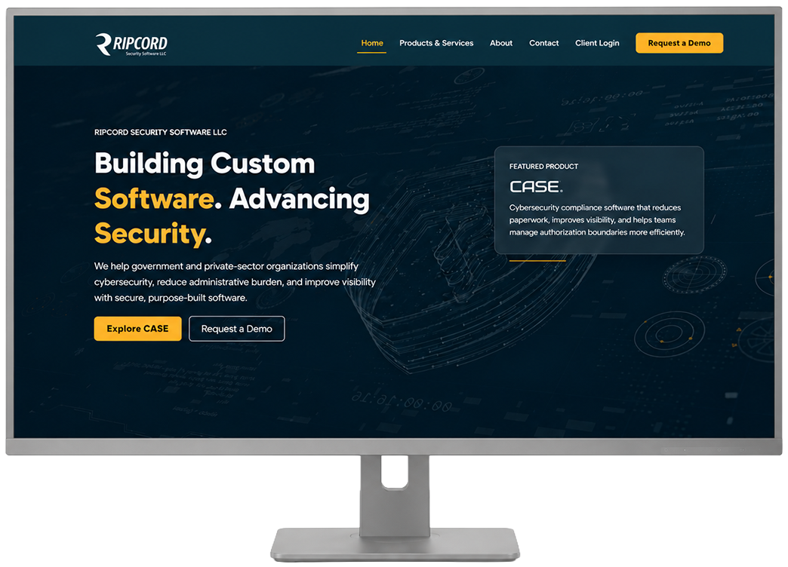

Case Study
Business Website & Secure Client Portal
Designing and developing a professional company website, then extending it into an authenticated, database-backed client portal for protected resources and software distribution.

Overview
My Role
Ripcord Security Software needed a professional website that could explain the company’s services, introduce its software product, establish credibility, and support conversations with potential clients.
I designed and developed the company website, structured its content, built the responsive interface, and deployed it through the company’s hosting environment. As the company’s needs expanded, I also helped transform the website into a secure client portal with authentication, SQL-backed user accounts, protected resources, and downloadable software updates.
Problem
The Challenge
The organization did not have a complete online platform for presenting its product, explaining its services, or supporting existing clients. Prospective customers needed a clear way to understand the company’s value, while active clients needed a secure method for accessing protected resources and downloading software updates.
A public marketing website and a private client portal serve different audiences and have different security requirements. The challenge was to create a consistent experience that supported both without exposing private client content or making the site difficult to maintain.
The solution also needed to fit within the company’s existing hosting environment and support future changes as its product and client relationships evolved.
Contributions
Design & Development
My work covered the public website experience, content architecture, responsive implementation, portal interface, authentication workflow, database integration, and deployment.
- Planned and designed the company website around its product, services, credibility, and business-development goals.
- Built responsive page layouts using HTML5, CSS3, Bootstrap, and JavaScript.
- Structured site content so prospective clients could quickly understand the company’s services and software offering.
- Created clear navigation, contact paths, and calls to action for demo requests and business inquiries.
- Developed a client-facing login experience and protected portal interface.
- Contributed to the authentication architecture and stored client user information in a SQL database.
- Built portal functionality for distributing protected software updates and client resources.
- Used PHP and HTML to support the hosted portal environment and its database-backed workflows.
- Deployed and maintained the website and portal through GoDaddy cPanel.
- Tested the experience across desktop and mobile layouts to support consistent access for prospective and existing clients.
Approach
From Public Website to Secure Client Experience
I began by creating the public-facing website as the company’s primary communication platform. The design focused on explaining the product, organizing service information, establishing trust, and directing visitors toward meaningful next steps.
As the company began supporting client access and software distribution, the site expanded beyond a marketing role. I developed a separate authenticated experience where registered users could sign in and access content that was not available publicly.
Keeping the public website and protected portal visually connected helped create a consistent brand experience, while separating their access rules ensured that client information and downloadable resources remained behind authentication.


{kind=link}
{kind=link}
Result
A Unified Platform for Clients
The completed website gave the company a professional online presence for communicating its product, services, and business value. Prospective clients gained a clearer path for learning about the company and initiating contact.
Expanding the site into an authenticated client portal added practical post-sale functionality. Registered users could securely access protected resources and software updates through a branded experience connected to the public website.
The project gave me hands-on experience taking a web presence from initial planning and visual design through responsive development, authentication, SQL-backed user management, PHP integration, protected downloads, hosting, and deployment.